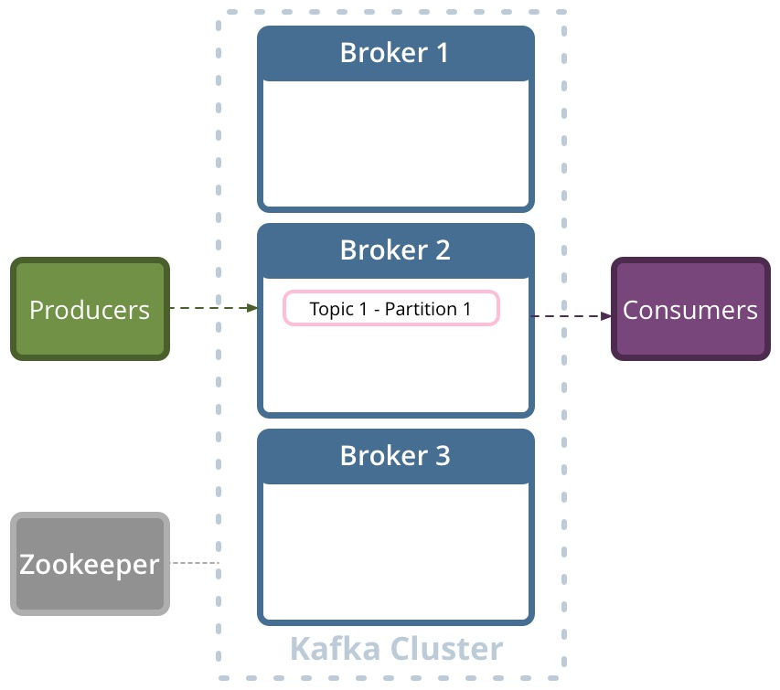
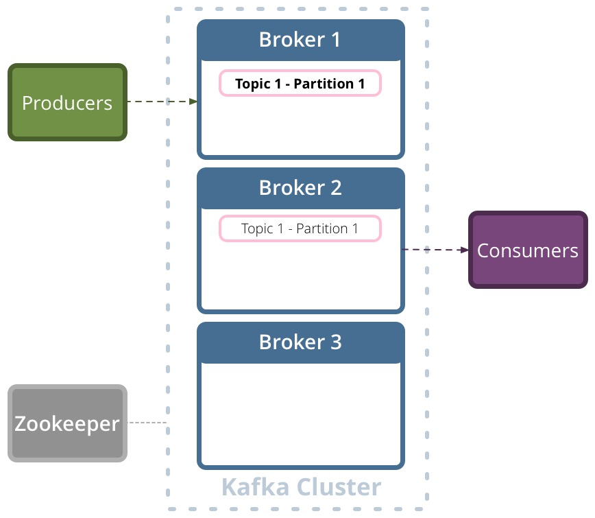
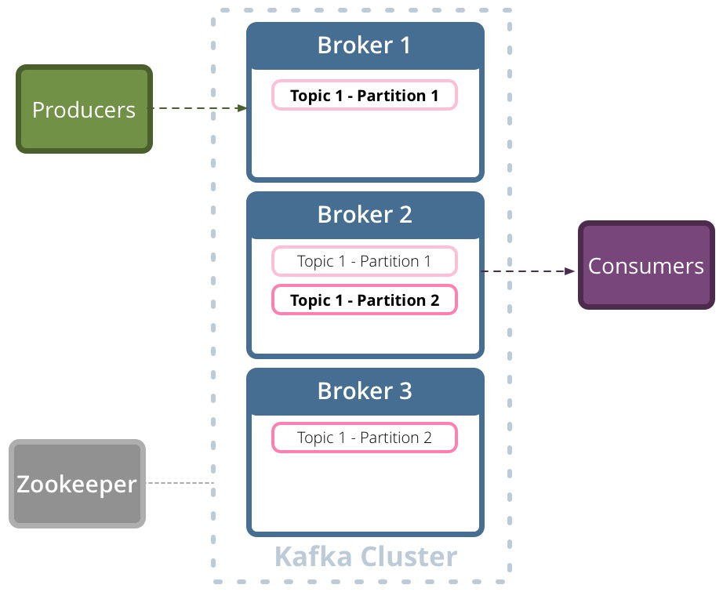
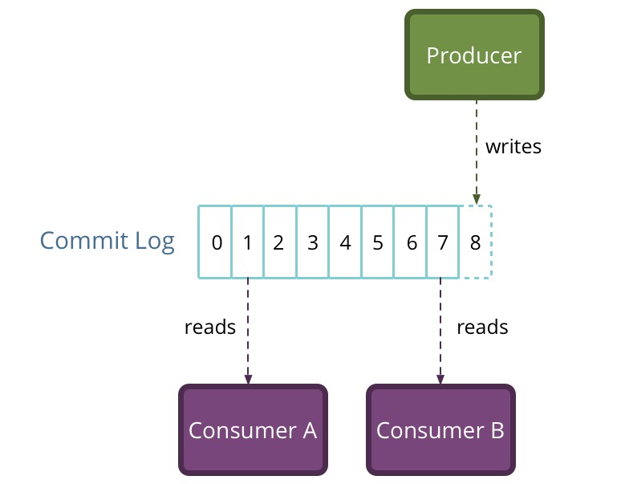

Apache Kafka
High-throughput messaging system as a distributed commit log
Decoupled data pipeline

How is Kafka different?
- Explicitly distributed
- Partitioned
- Replicated
- Dumb pipelines
Brokers

Replicated

Partition leader

Partitioned

Overview

Topic and Partitions

Topic and Partitions

Where to use?
- Real time event/log aggregations
- Speed layer in the Lambda architecture
- Real time news feeds/metrics/alerts/monitoring
- Data loading for data processing systems
- Event sourcing
- Commit logs